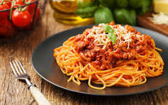

Spaghetti

Description
This spaghetti recipe is a classic Italian pasta dish with a rich tomato sauce, garlic, and fresh herbs. Perfect for a cozy family dinner.
Follow these steps to cook the spaghetti to al dente perfection and create a flavorful sauce that everyone will love.
Ingredients
- 12 oz spaghetti noodles
- 2 cups marinara sauce
- 1 lb ground beef or Italian sausage (optional)
- 1 tbsp olive oil
- 2 cloves garlic, minced
- 1 tsp salt
- 1/2 tsp black pepper
- 1 tsp dried oregano
- Grated Parmesan cheese for serving
Steps
- Cook the spaghetti noodles according to package instructions.
- In a skillet, heat olive oil and sauté garlic until fragrant.
- Add ground beef or sausage (if using) and cook until browned.
- Pour in marinara sauce, season with salt, pepper, and oregano, and simmer for 10 minutes.
- Drain the spaghetti and mix with the sauce.
- Serve hot, topped with grated Parmesan cheese.
Home